Slides shell: variant A mock-up and html-slides
Example deck community-garden.html, slide 4. The mock-up shows its own fictional deck and a document-settings panel (theme and font, task TH02), which this task does not add. Regenerate with node tools/shell-compare.mjs.
| State | Chrome height, before | Chrome height, now | Slide width, before | Slide width, now | Page scroll, before / now |
|---|---|---|---|---|---|
| 1440 × 900, editing, chart selected | 88 px | 84 px | 1204 px | 1204 px | false / false |
| 375 × 812, editing, chart selected | 88 px | 84 px | 139 px | 335 px | false / false |
| 1440 × 900, editing, nothing selected | 88 px | 84 px | 1204 px | 1204 px | false / false |
| 1440 × 900, reading | 0 px | 0 px | 1280 px | 1280 px | false / false |
| 375 × 812, reading | 0 px | 0 px | 335 px | 335 px | false / false |
1440 × 900 · editing, chart selected
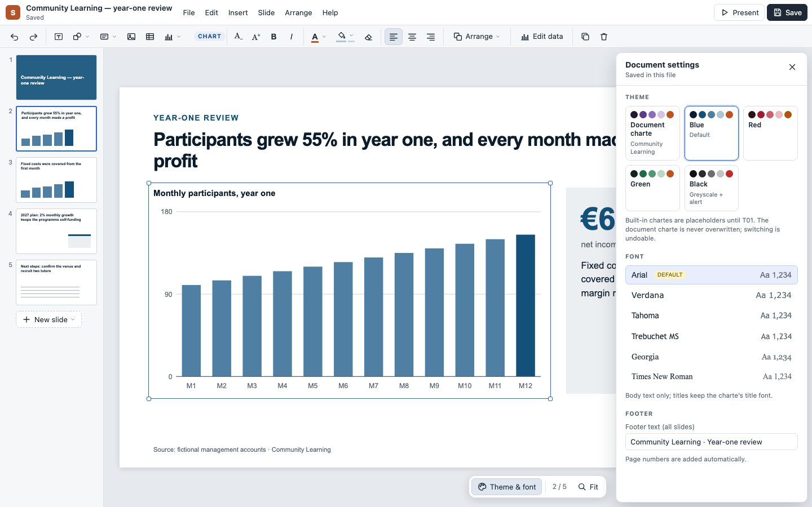
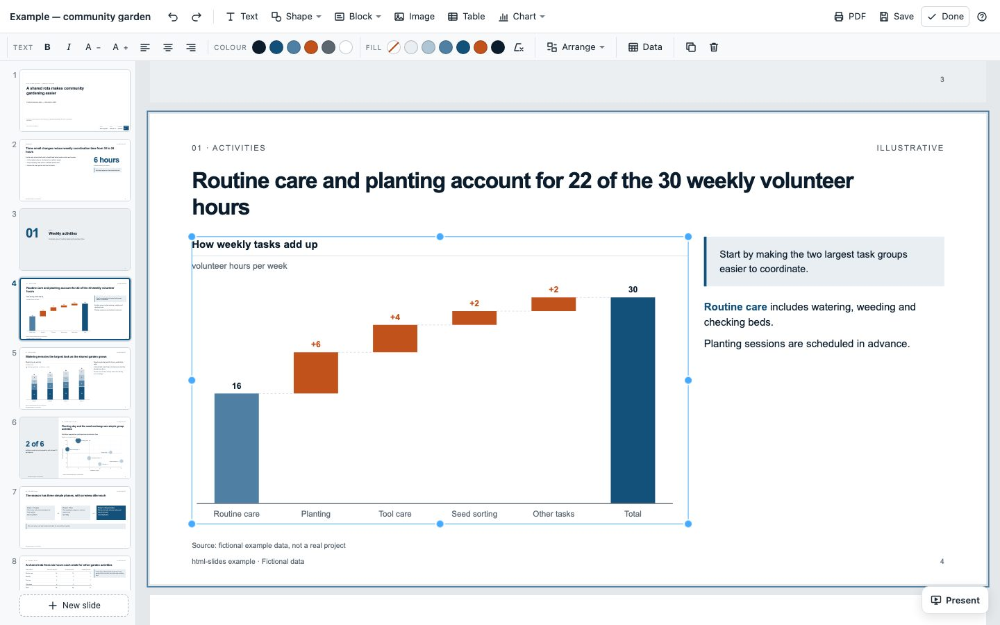
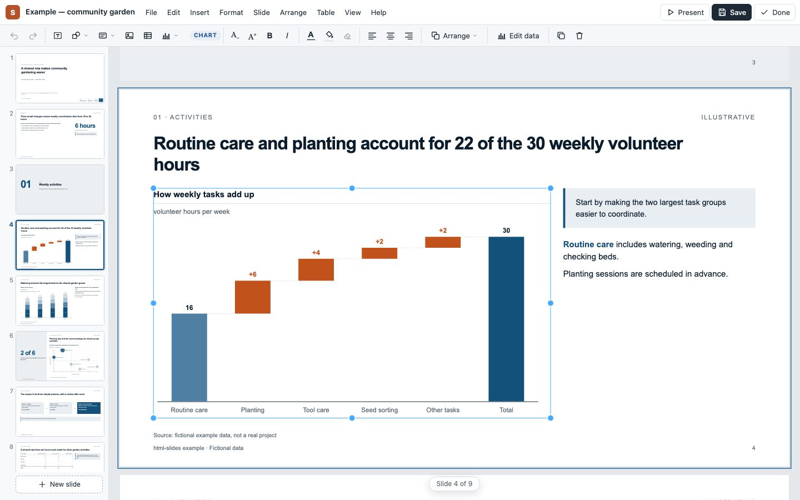
375 × 812 · editing, chart selected
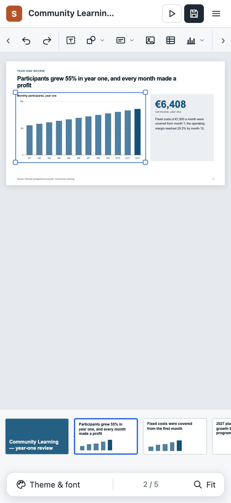
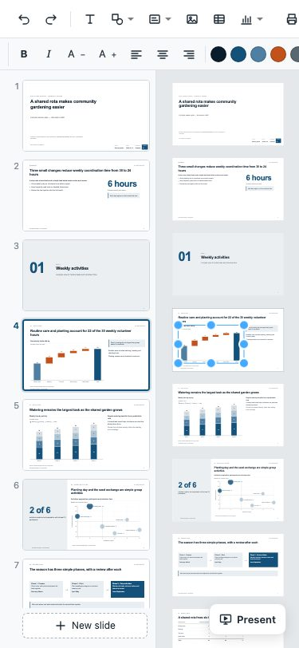
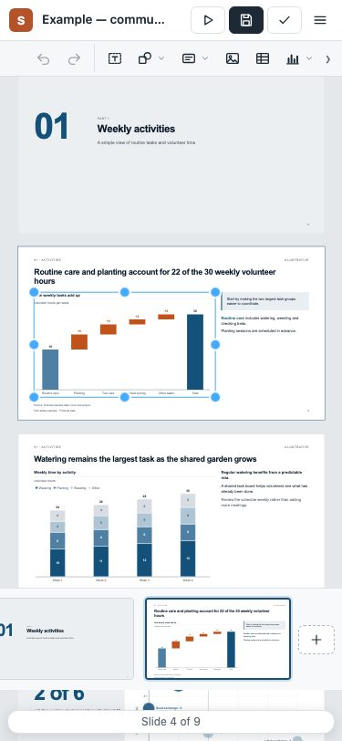
1440 × 900 · editing, nothing selected
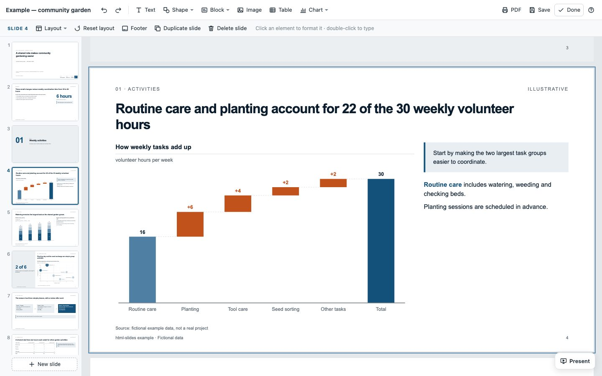
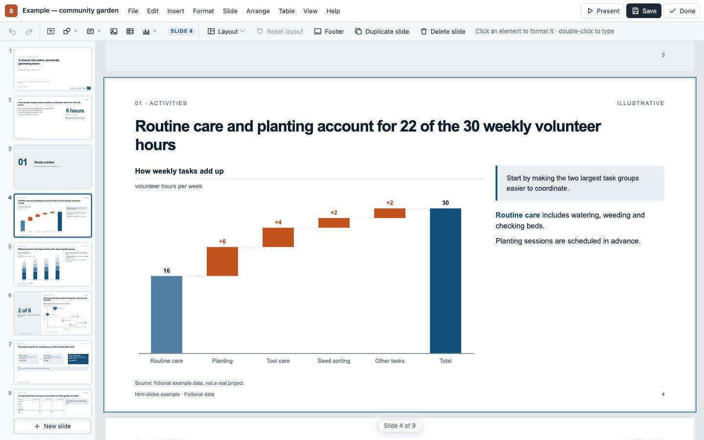
1440 × 900 · reading
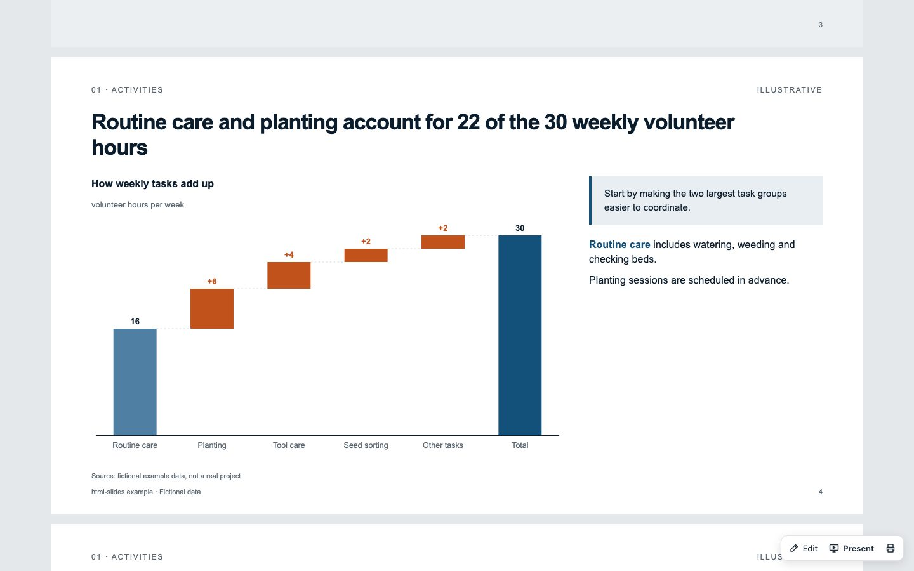
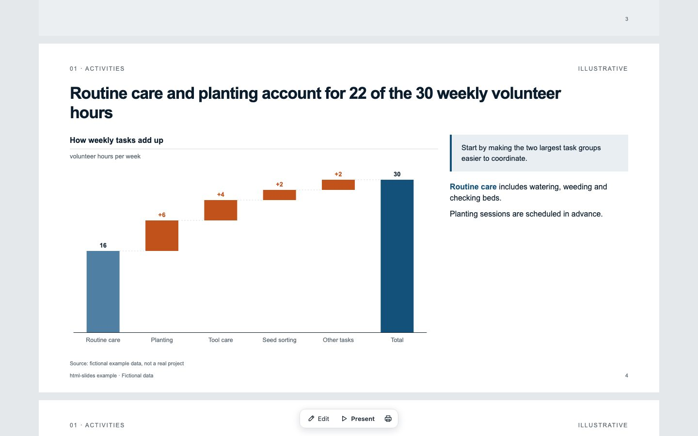
375 × 812 · reading
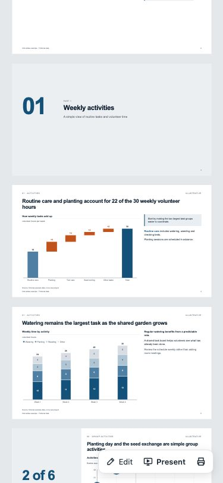
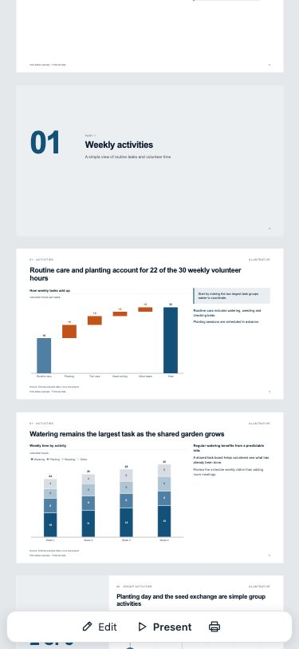